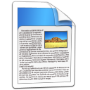

Tema
Baseado nos conceitos propostos por renomados especialistas em desenvolvimento
de software orientado a objetos quanto a um código limpo,
este trabalho tem o objetivo de estabelecer uma relação direta entre esses aspectos
subjetivos estudados e seu mapeamento para métricas de código fonte.
Após um levantamento dos principais conceitos e técnicas, tentaremos apresentar uma ou mais métricas para servirem
como indicativo. Por fim, o trabalho apresentará ferramentas para auxiliar na extração desses valores e que possibilitarão
um acompanhamento do código ao longo do desenvolvimento do software de forma automatizada.
Objetivos
O principal objetivo deste trabalho é auxiliar os programadores a melhorem a expressividade e clareza de seus códigos-fonte
através de um mapeamento objetivo do conhecimento de especialistas em desenvolvimento de software.
Para tanto, agruparemos os principais conceitos da literatura relacionada e proporemos um conjunto
de métricas para facilitar uma avaliação mais profunda.
A proposta surgiu da nossa própria necessidade de entender o que é um bom código orientado a objetos. Gostaríamos de desenvolver
um trabalho para nos aprofundarmos no tema, além de possivelmente auxiliar outras pessoas a pensarem nos seus códigos.
Com um mapeamento das ideias subjetivas para medidas objetivas, podemos facilitar
o processo de avaliação e dar uma base de comparação, tanto entre projetos e suas versões, quanto com os conceitos propostos.
Uma vez com um modelo teórico, gostaríamos de obter as métricas de maneira automatizada.
Sendo assim, também temos como objetivo desenvolver e apresentar ferramentas que podem calcular tais valores e que possibilitem um
acompanhamento do projeto.
Resumo
Ao produzir software, os desenvolvedores não podem ficar satisfeitos com um código que simplesmente faz o trabalho que deve ser feito.
É preciso considerar que será necessário manter a aplicação, fazer mudanças à medida em que os requisitos se alterarem e que outros
terão que usar e aprimorar o código.
Diante disso, este trabalho aborda ideias e conceitos elaborados por especialistas no desenvolvimento de software
orientado a objetos, buscando um maior entendimento de boas soluções, práticas e cuidados quanto ao código-fonte. Segundo Robert Martin,
um programador deveria sempre fazer com que seu código seja uma composição de instruções e abstrações que possam ser facilmente entendidas, uma
vez que gastamos a maior parte do tempo lendo-o para incluir funcionalidades e corrigir falhas.
Os seguintes livros são base para os nossos estudos: Clean Code de Robert Martin,
Implementation Patterns de Kent Beck e, possivelmente Code Complete de Steve McConnell.
Todos possuem diversos aspectos que ajudam a identificar o que é um código limpo como escolhas de bons nomes, falta de duplicações, organização e
simplicidade. Esta monografia conterá uma reunião de todos esses, explicitando sua relevância e aplicação.
Além de conter o levantamento teórico acima citado, esse trabalho também apresentará um mapeamento entre os conceitos encontrados na literatura em
uma avaliação objetiva através de métricas de código-fonte. A ideia é possibilitar aos programadores fazer uma avaliação do software
usando dados que espelham o que os especialistas recomendam, tornando possível um acompanhamento do projeto.
A grande vantagem de usar métricas de código-fonte é que elas podem ser bons indicativos para os critérios subjetivos, além de serem extraídas
computacionalmente com ferramentas capazes de interpretar o código-fonte e calculá-las. Diante disso, apresentaremos o Projeto Mezuro que contém
ferramentas com intuito de automatizar a extração dessas métricas.
Atividades
Desenvolvimento de Ferramentas
Participamos de um grupo de pesquisa orientado pelo Prof. Fabio Kon, no qual colaboramos com o desenvolvimento de ferramentas
capazes de calcular métricas de código-fonte. Já estamos trabalhando em cima de uma ferramenta livre, chamada Analizo, desde o
segundo semestre de 2009, que, atualmente, analiza projetos nas linguagens Java, C e C++.
Além disso, durante a Disciplina de Laboratório de Programação Extrema começamos o desenvolvimento para possibilitar o
acompanhamento online das métricas de um projeto. Essa aplicação chama Mezuro e conta com a colaboração dos doutorandos Paulo
Meirelles do IME e Antonio Terceiro da UFBA.
Por fim, ainda há uma ferramenta chamada Kalibro cujo objetivo é prover uma interface
para o usuário trabalhar com as métricas extraídas pela Analizo, além de permitir a configuração de intervalos para as métricas
dando um caráter mais subjetivo.
Atividades da Lucianna
O que já foi feito?
O que falta fazer?
Atividades do João
O que já foi feito?
Terminei a leitura dos livros Clean Code de Robert Martin e Implementation Patterns de Kent Beck. Durante essa
atividade, fiz um tipo de resumo dos conceitos principais apresentados.
Em seguida, escolhi os aspectos que gostaria de trabalhar e citar, organizando-os em uma estrutura de trabalho com um
bom grau de detalhamento. Desde então comecei a redigir a monografia. Terminei a primeira versão da sessão que falo de
funções e classes, estando a pouco de terminar a de nomes.
O que falta fazer?
Basicamente, o que falta fazer é terminar de escrever a monografia em si. Infelizmente dois dos livros que gostaria de trabalhar
provavelmente não vão entrar no trabalho: o Beautiful Code não se encaixa exatamente no contexto do trabalho e não encontrei o
livro Code Complete na biblioteca. Possivelmente conseguirei o segundo e encaixarei suas ideias para dar mais argumentos no texto
que já foi redigido.
Atividades em Conjunto
O que já foi feito?
Todo o trabalho mais prático já foi feito durante a iniciação científica. As ferramentas que serão citadas na monografia já estão
funcionais e prontas para download e instalação.
O que falta fazer?
Precisamos trabalhar em conjunto para redigir os capítulos de introdução e metodologia de trabalho. Além disso, precisamos montar o
poster e criar a apresentação do trabalho.
Cronograma
| Atividade / Mês |
Mar |
Abr |
Mai |
Jun |
Jul |
Ago |
Set |
Out |
Dez |
| Desenvolvimento de Ferramentas do Mezuro
| X |
X |
X |
X |
X |
|
|
|
|
| Estudo da Literatura
| |
X |
|
X |
X |
X |
|
|
|
| Elaboração do Mapeamento
| |
|
|
|
|
X |
X |
X |
|
| Seminário sobre Código Limpo
| |
|
|
|
|
X |
|
|
|
| Escrita da Monografia
| |
|
|
|
|
X |
X |
X |
X |
| Apresentação
| |
|
|
|
|
|
|
|
X |
Estrutura Esperada
Introdução
Nesta seção discutiremos por que temos que nos preocupar com o código-fonte de nossas aplicações. Usaremos argumentos bastante
conhecidos pela Engenharia de Software e abordaremos aspectos negativos da falta de preocupação com o código. Além disso, falaremos
um pouco sobre a bibliografia usada e os aspectos que compõe o trabalho.
Critérios Subjetivos
Apresentaremos uma visão geral dos principais conceitos e idéias da literatura feita por grandes especialistas na área.
Faremos um apanhado geral dos pontos em que os autores concordam, mostrando como podemos melhorar nosso código e porque
determinados aspectos devem ser evitados.
Métricas Objetivas
Apresentaremos uma visão geral sobre métricas de código-fonte e como podem servir como indicativos para identificar atributos importantes
do código-fonte.
A sessão também conterá uma discussão sobre como podemos mapear os conceitos da seção anterior em métricas objetivas. A ideia é apresentar
quais métricas podem ser utilizadas, como obtê-las e como cobrem os aspectos subjetivos.
Projeto Mezuro: ferramentas para acompanhamento de métricas de código-fonte
Conterá uma apresentação das ferramentas desenvolvidas no contexto do Projeto Mezuro capazes de
calcular as métricas e prover o acompanhamento de um projeto. Além disso, mostraremos como as ferramentas podem ser utilizadas
para automatizar o mapeamento proposto.
Conclusão
Bibliografia
Arquivos
Finais
|  |
|
|
| Proposta |
Poster |
Monografia |
Temporários
 |
|
|
| Resumo Clean Code |
Resumo Implementation Patterns |
Capítulo Código Limpo |